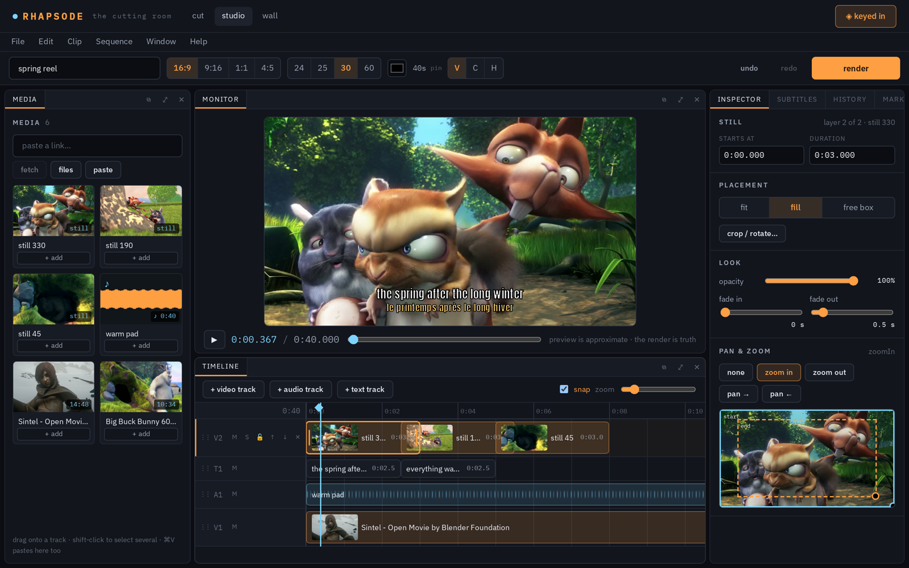
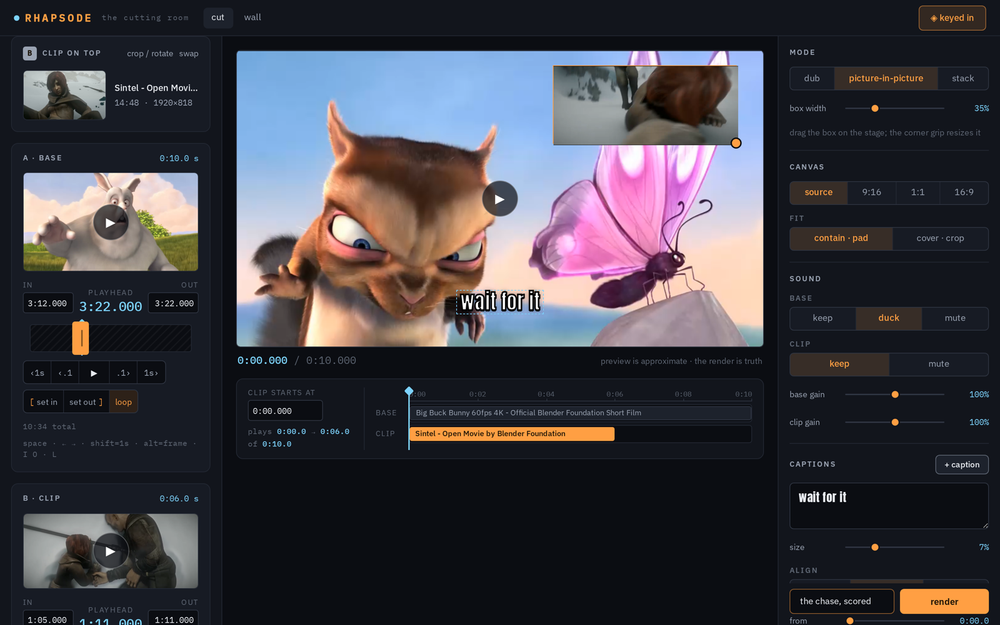
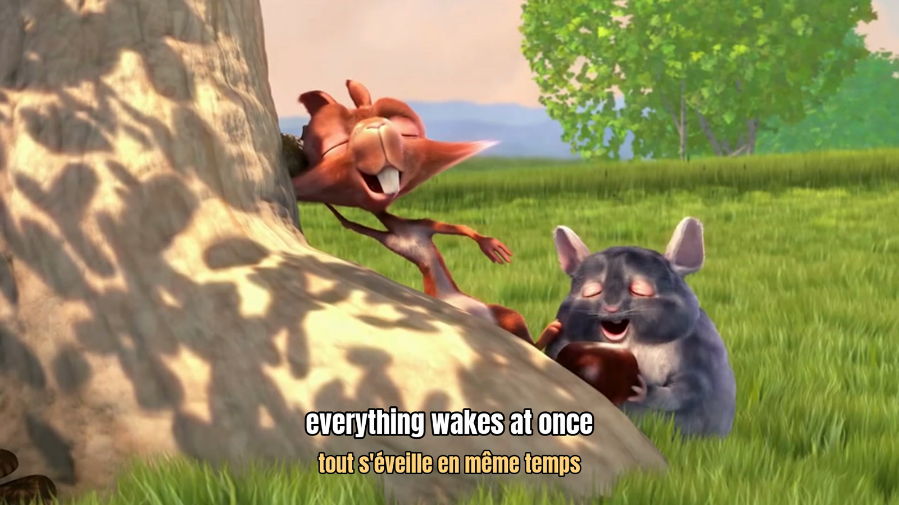
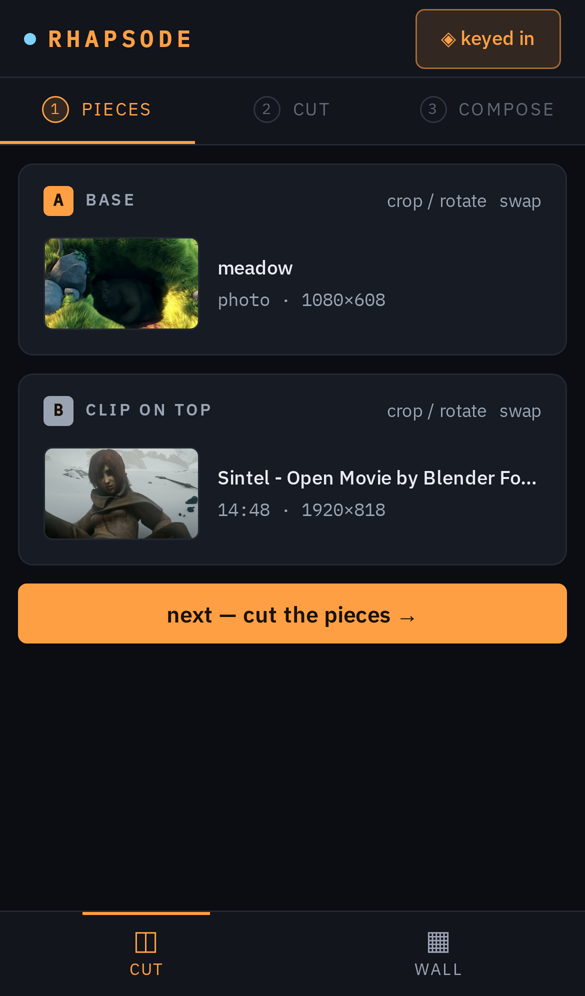
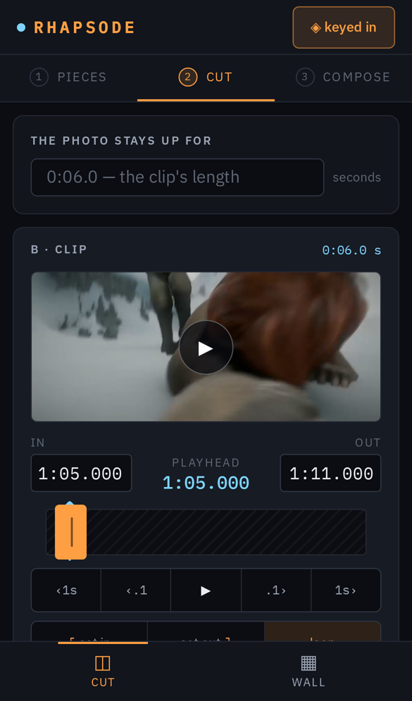
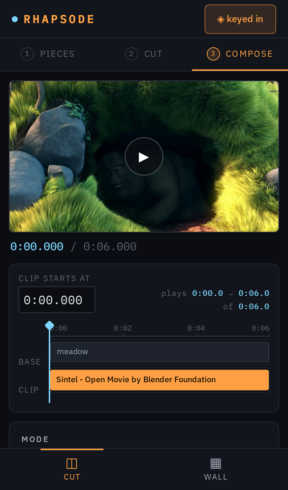

Take a piece of one thing.
Lay it on another.
A self-hosted cutting room. Paste a link or drop a clip, cut the seconds you want, stitch them onto something else, and render on your own GPU.

Two pieces, one decision
The quick path. A base and a clip on top, and how they meet: a dub, a picture-in-picture, or a stack. Captions if you want them. Done in a minute, on a phone.
- Any link yt-dlp reads, or your camera roll. Long videos fetch a window around the moment you point at.
- Frame-honest trimming. Typed in and out points, a playhead on the keyboard, a proxy cut from the same file the render reads.
- Links that unfurl. Two-word addresses with video previews for WhatsApp, Telegram, X and iMessage. Plain mp4 too.

A multitrack cutting room when two pieces are not enough
Any number of video, music and text tracks. Photos that pan and zoom, clips that dissolve, floating boxes, subtitles with a second line for translations. Still one ffmpeg command at the end.




Pieces, cut, compose
Three steps sized for a thumb. Paste a link or a photo, drag the handles, render. The job finishes even if you switch apps.
The recipe is the whole edit
The browser edits a recipe. The server validates it, turns it into a single ffmpeg command through one pure function, renders it with NVENC, and keeps the recipe with the result so it can be remixed.
// a two-piece recipe { base: { kind: "image", source: "7a45…" }, overlay: { source: "1e0d…", in: 62.0, out: 68.5 }, mode: { kind: "dub" }, audio: { base: "duck", overlay: "keep" }, captions:[{ text: "wait for it", y: 0.9 }], output: { aspect: "9:16" } }
yt-dlp or a streamed upload lands one original per source.
A scrub-friendly copy derived from that same file.
Cuts, mode, audio, captions, canvas — one schema both sides speak.
A pure function maps it to ffmpeg argv, pinned by tests.
One run with live progress; poster; publish.
One package, your machine
Vite + React client, a Hono server Node runs directly, a shared schema. Media and a SQLite file under data/. Viewing is public, creating needs the key.
Needs Node ≥ 24, ffmpeg and yt-dlp on the PATH. An NVIDIA GPU is used when present. Renders are capped at 3 minutes, sequences at 10. MIT.
git clone https://github.com/ZahakJ/rhapsode cd rhapsode && cp .env.example .env # set INVITE_KEY npm install npm run dev:server # :5950 npm run dev # :5951